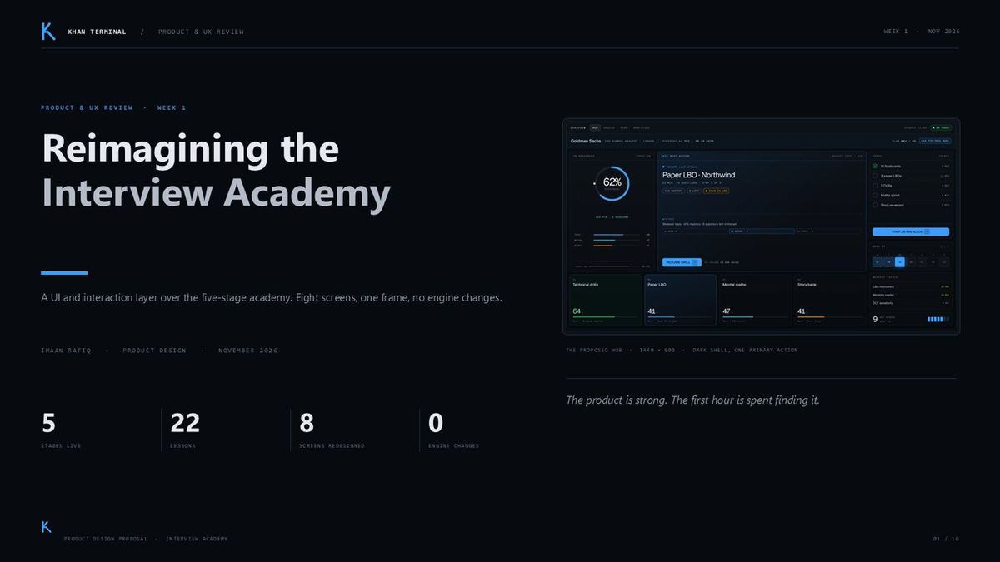
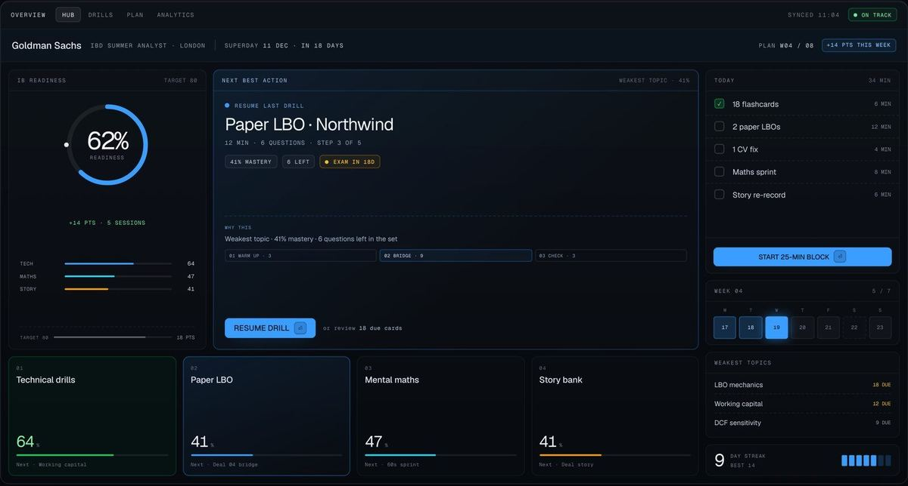
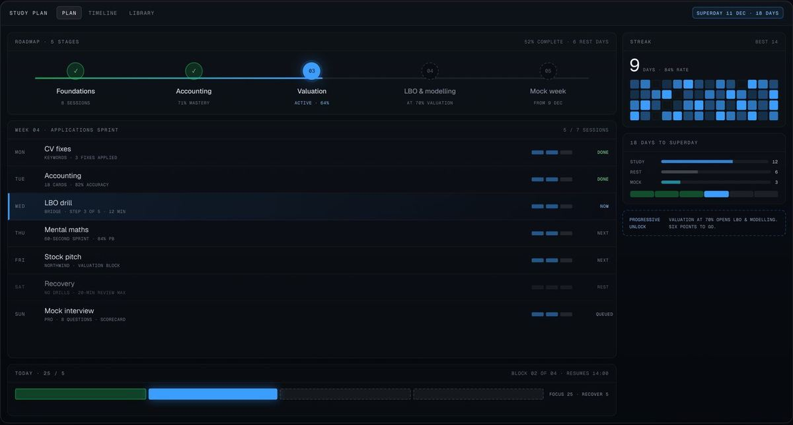
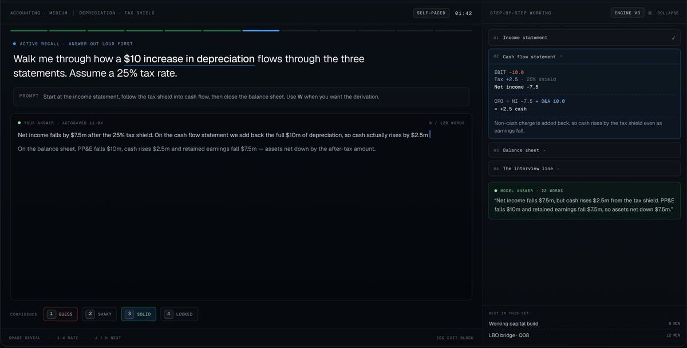
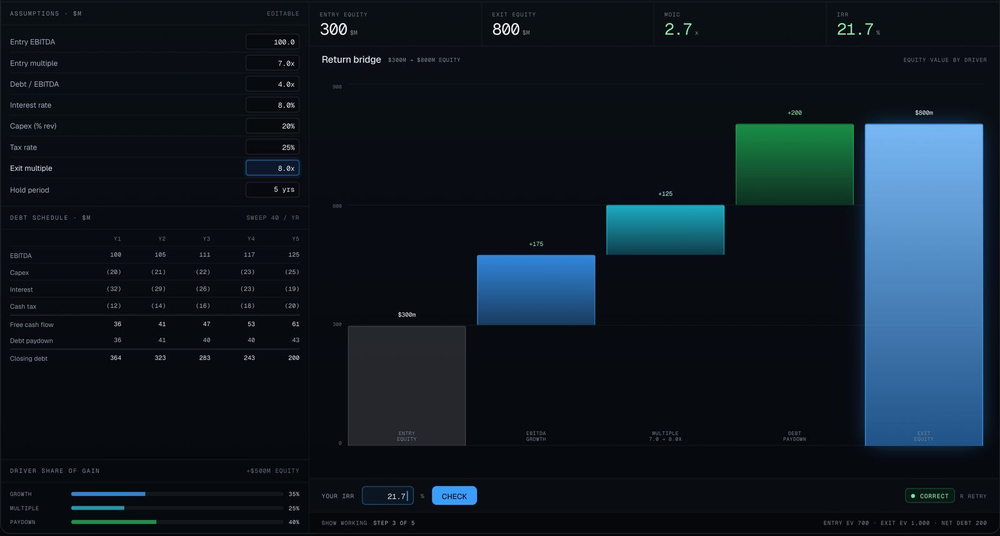
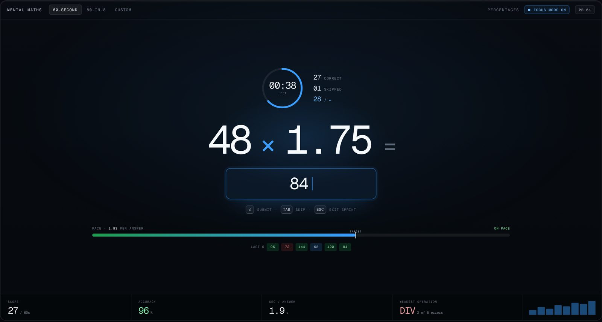
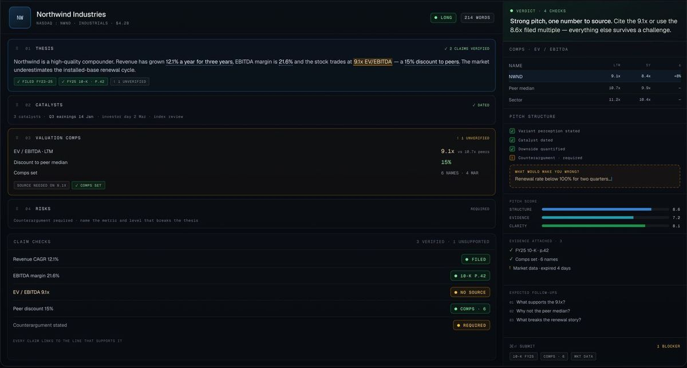
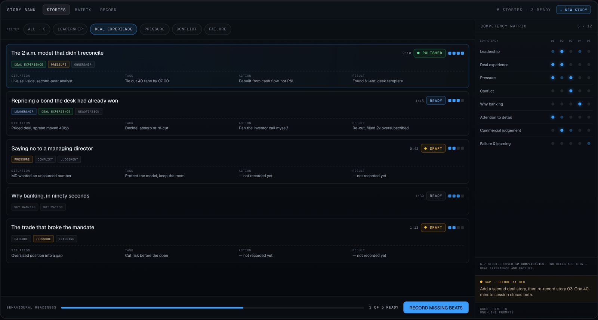
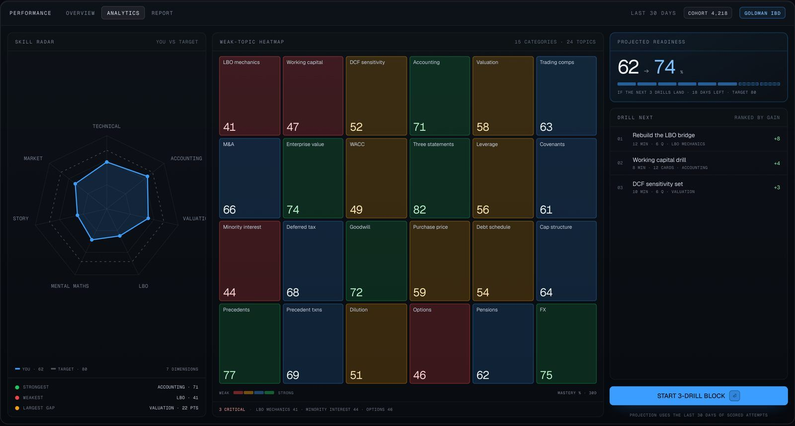

Khan Terminal Interview Academy
A week one audit of a live finance interview-prep platform, then a proposal for the study surface inside it: eight screens on one frame, and no change to the engines underneath.

- Role
- Product and UX review · Interface design · Design system · Rollout plan
- Context
- Product design and UX intern on the founding team
- Deliverables
- A week one audit, then a redesign proposal for the academy
- Scope
- Eight screen concepts, five stages, no engine changes
Five stages, and no obvious place to start.
Khan Terminal is a finance interview-prep platform. The Interview Academy is the study side of it: five stages running from applications through technicals and maths to interviews, with 22 lessons, six maths modes and three tools held back for Pro. A free account already gets most of the product. The trouble was finding it.
I joined the founding team as product design and UX intern. Week one was an audit of the live site, signed in on the free plan. The weeks after went into a redesign proposal for the academy: eight screens, one frame, and no change to the engines that run the lessons.
Seven findings. Three of them blocking.
The audit was a WCAG 2.1 AA pass and an expert review, done in one signed-in session on the live site. Nine pages, with every measurement read from the page itself: contrast ratios, control sizes, headings and load times. I ran the whole thing twice, a few days apart, so anything that had been fixed in between would drop off the list.
Three findings were blocking, and all three land in the first minute. The signed-in greeting used a demo name instead of the name on the account. The watchlist route returned a 404, on a white page with no app shell around it. And the header still asked a signed-in user to sign in.
- 01IdentityThe brief greeted me with a demo name rather than the account name. Bind it to the signed-in user, fall back to the email local part, never to a sample name.
- 02WatchlistThe route was a dead end, and the error page dropped the dark shell. Restore it, keep the shell, and use the empty state to invite the first add.
- 03SessionWith an active session the header still showed Sign in. Swap it for an account menu once the session exists.
- 04ContrastBody grey measured 3.38:1 against the background, under the 4.5:1 floor. Lift the muted token to #8A93A3 and every page improves at once.
- 05Three AI panelsConviction, Second Opinion and Ask Anything sat side by side with no order to them. Name the job each one does and recommend one to open with.
- 06CanvasThe flagship sat behind Pro with no preview at all. Let the free plan open one read-only canvas and gate saving and export instead.
- 07Targets and motion55 of 82 controls on the homepage were under 24px, Markets had no H1, and no page honoured reduced motion. Three small fixes, one shared baseline.
The audit also listed what not to touch: page speed, honest sample data, keyboard support with a real command palette, and a calm dark layout. Most of the proposal is built to keep those.
The content was there. The framing was not.
The academy already had five stages, 22 lessons and six maths modes, plus the scoring, timers and question bank that make them work. None of that needed rebuilding. What it needed was a surface around it: one clear next action, a visible path through the stages, and a type scale with more than one size in it.
So the proposal kept every engine and drew eight screens on a single frame. The palette came from the product, and so did the type and the keyboard habits, which makes this a layer over what exists rather than a new product wearing the same name.
- 01LabelsThe academy’s muted labels sat at 4.4:1 on the dark background. They sit at 7.2:1 in the proposal, comfortably above the 4.5:1 floor.
- 02TypeOne size at 11px was doing every job. Three altitudes, 34 / 20 / 11, now separate display, heading and label.
- 03ChoiceThree equal start actions read as a menu. One action is primary, and the other two stay available without competing with it.
- 04SessionNothing gave a session a shape. Blocks run 25 minutes with a 5 minute recovery, so fatigue has a container and an end.
One frame, six rules.
Every screen that follows is an instance of this page. Six rules hold it together, and the last one is the test: if a screen needs a new component to fit, the frame is wrong, not the screen.
- 01Three type altitudes34 / 20 / 11. One display, one heading, one label, and never two sizes doing the same job.
- 02Status colour, measuredGreen, amber and red always arrive with a label. Colour never carries the meaning alone, and contrast stays at 4.5:1 or better.
- 038px rhythm8, 16, 24, 32. Spacing becomes deliberate rather than accidental.
- 04One panel anatomyLabel row, body, footer. The same shell and the same padding in every workspace.
- 05Keys at the point of useThe shortcut is printed next to the action and stays one keystroke away.
- 0625 / 5 pacingEvery block opens with one action and closes with a recovery cue, so there is somewhere to stop.
One loop, eight screens.
Each screen answers one friction point from the audit without adding a lesson or an engine. The loop is the point: open the hub, resume a single drill, get a score that says what to change, and come back to a ranked next action.
Read them in order if you like, or start at the LBO and work backwards. The deck page for each one lists what it preserves.








Ordered by cost to the first hour.
Eight changes, ordered by what they cost a new candidate rather than by how long they take to build. Of the eight screen changes, the Overview is the only blocking one, because that is where the drop-off happens. The Pro gate on the mock interview is the largest missed opportunity after it.
- 01OverviewNext step buried. Blocking. One primary action makes the start obvious.
- 02Tests and interviewsPro gate. Major. A preview of the mock interview, then a clear upgrade path.
- 03Technical drillsThree clicks deep. Major. Surface the drill inside the stage it belongs to.
- 04LBO lessonSplit screens. Major. Model and bridge on one screen.
- 05Maths arcadeOne score. Major. Split pace from accuracy so the result says what to change.
- 06Stock pitchBlank start. Major. Four blocks and the claim checks up front.
- 07Study planNo preview. Major. The week by week path, before the date is entered.
- 08Story bankInvisible gap. Minor. A coverage matrix for the twelve competencies.
Eleven weeks, three phases.
Phase one stops the bleed: the muted token and the Overview, shipped behind a flag. Phase two rebuilds the four workspaces. Phase three closes the loop with readiness, a visible plan and the Pro mock interview, then tests it with eight candidates. Each module keeps a fallback to the current screen, so a phase can ship without waiting for the next one.
- 01Weeks 1 to 2, stop the bleedOverview with one primary action, stage progress instead of tabs, the muted token lifted to 7.2:1, all behind a flag.
- 02Weeks 3 to 6, rebuild the workspacesTechnical drills as one canvas, the LBO model and bridge together, maths with pace against accuracy, pitch and story with checks and a matrix.
- 03Weeks 7 to 11, close the loopReadiness across five stages, a study plan you can see, the Pro mock interview and replay, then a usability test with eight candidates.
The 30% is a target for the pilot, not a result. Nothing described here has shipped yet.
A proposal, not a launch.
The eight screens are concept visuals drawn for the proposal deck. They are mine. The build is the product team’s, and the deck was written for the product lead to review, cost and schedule, which is why every screen lists what it preserves and every phase has a way back.
The audit is the part I would defend hardest. It is where the three blockers came from, and every number in it can be measured again on the live site in an afternoon.
If I ran the project again, I would put the usability test before the screens rather than after them. That is the one thing I would change about the order.